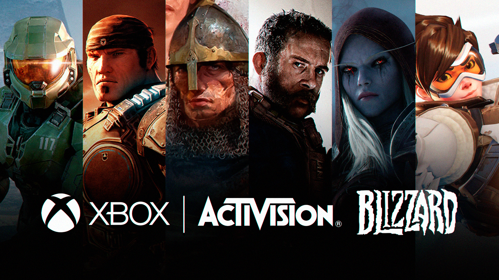

Microsoft y Activision Blizzard | Noticia
Microsoft adquiere Activision Blizzard
En un atrevido movimiento, Phil Spencer anunció la adquisición de Activision Blizzard por parte de Microsoft, por un valor de casi 70 mil millones de dólares.
El acuerdo se desarrollará entre julio de 2022 y junio de 2023, e implicará que franquicias como Diablo, Call of Duty y World of Warcraft -junto con otras nuevas- quedarán bajo la supervisión de Spencer. Hasta que la operación se complete, ambas compañías trabajarán independientemente y Bobby Kotick continuará como CEO de Activision Blizzard.
¿Qué opinás de esta gigantesca adquisición por parte de Microsoft?